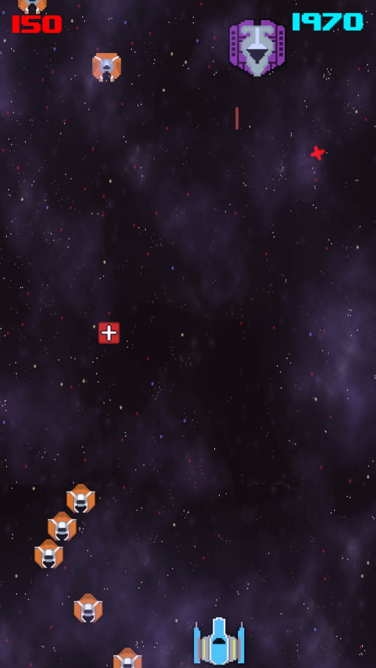
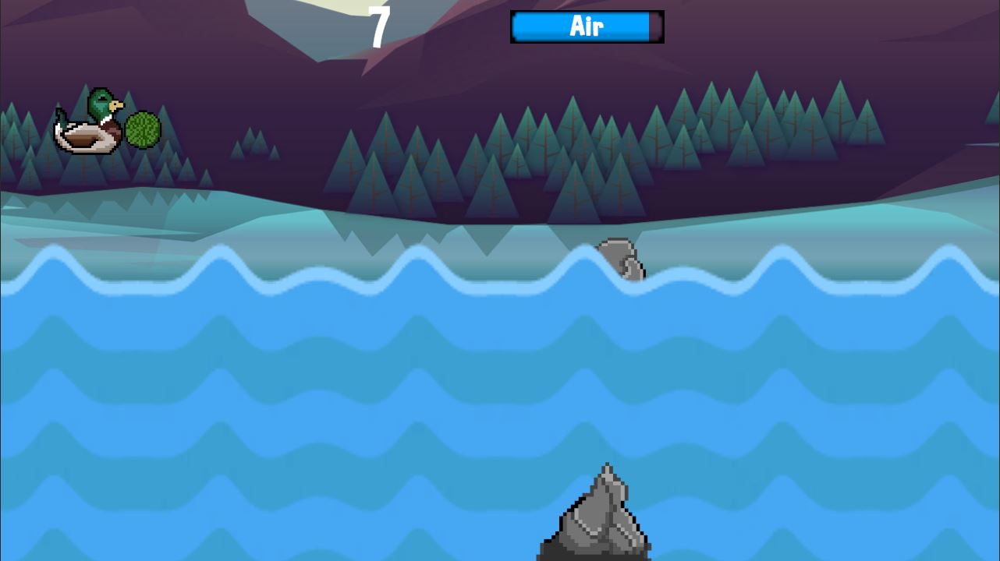
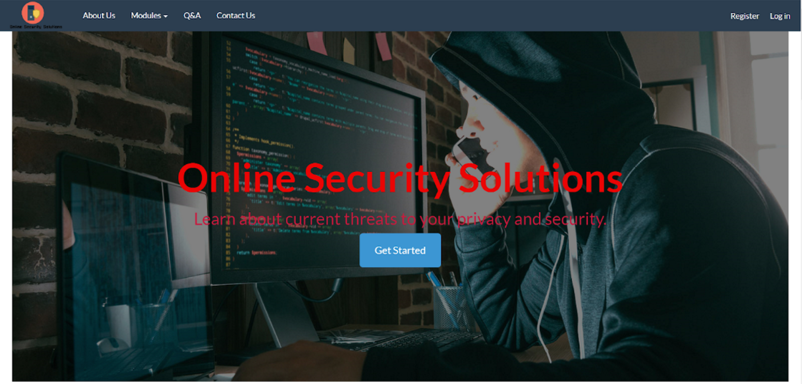

Introduction
Hi! I'm George. A Business Computing Graduate from the University of Brighton. I am looking for opportunities in the Games Industry or Web development.
A portfolio of my projects.
Space Tracer is a top down space shooter built for mobile inspired by Galaga and Space Invaders.
An endless runner built for mobile where you play as a mallard duck avoiding obstacles.
An online learning resource to help the public secure their devices and digital identity. Built using the MVC Framework with ASP.NET.
Space Tracer is an space shooter game built for mobile. Available on the Google Play Store for free.
Space Tracer was a project I came up with and designed in October 2021. It is the first game I released and was built in Unity using C# as the programming language. I was very heavily inspired by Space Invaders and Galaga, I wanted to make a top-down arcade space shooter inspired by these games and to attempt to capture the competitiveness and addictive nature of arcade games. In my design document I set out that I wanted to make the game for mobile devices and use the touchscreen to control the player movement. The player's movement is restricted to just move along the x-axis. The overall goal and gameplay loop is to rack up as high of a score as possible whilst avoiding fast paced ships and projectiles. There are up to 20 unique waves to destroy with a big boss every 5 waves. The waves will loop continously as long as the player is alive. The gameplay is fairly high paced and if you do not destroy enough enemies you will easily get overwhelmed. To help you in your mission to destroy as many enemies as possible there will be random power ups that will fall from the top of the screen down towards the player which will help you to survive or to destroy ships more easily. During testing I got some feedback that even though there's a high score there's no way to directly share or compare with other people that may play the game. I wanted to implement some kind of leaderboard but I was unsure how to do so given this was my first project. However, after a lot of time learning about Google Play Games Services I used the CloudOnce plugin to create a leaderboard and shortly after some achievements. It is a great feature which gave players more of an incentive to beat their high scores by comparing and competing with friends and players worldwide to capture the competitiveness I discussed earlier. I have also made a website on Github Pages for Space Tracer to help promote the game and go more in depth about it's development. It's built using HTML, CSS, Bootstrap and some Javascript.
Duck Dive is an endless runner where you dive underwater through obstacles or fly in the air to try and survive as long as possible.
Duck Dive was a game inspired by a video clip I was shown of a Mallard Duck feeding off the bottom of a pond. Based of off this clip I then began brainstorming ideas. I wanted to not only use what I had learned in the creation of Space Tracer but build upon it and improve my programming skills. Duck Dive was also built in Unity using C#. For the gameplay loop I decided to follow a similar gameplay loop to Space Tracer but instead of dodging lasers you must dodge debris & obstacles. The player avoids obstacles and Swan's through diving underwater by pressing a finger on the screen. The player can also avoid obstacles by swiping up on the screen to fly over them which will allow your oxygen meter to regenerate and to try and catch pea's and bread. However, this comes at a cost because the player gains points through successfully dodging obstacles underwater. The game is endless until you collide with an obstacle or run out of oxygen. The obstacles spawn randomly every few seconds for a unique and challenging experience every time. To also add an incentive for players to beat their high scores and earn achievements I used what I had learnt from Space Tracer to implement google play games using the CloudOnce plugin for Duck Dive also. One of the biggest difficulties I encountered on Duck Dive was tuning the diving and flying mechanics and dealing with the water physics. For diving I had to strike a good balance between getting the duck to float back to the surface of the water whilst also not providing too much resistance against the Duck when diving underwater. Through testing the game with friends I got great feedback about the feel and weight of the Duck in flying and diving and I struck a good balance between the two to make the gameplay very smooth and responsive. Another difficulty I encountered was monetizing Duck Dive. Whilst the app is free like Space Tracer I wanted to test the water with advertisements in order to generate some revenue. I went for a banner advertisement as I felt it was the least instrusive in regards to the user experience and flow of the game. I originally had banner ads on all menu screens and the game over screen however it felt bloated and took up a lot of space that I wanted to use for UI elements as well as accessibility when it came to text & button sizes and positioning. I put the banner ad in the game over screen, it was the least instrusive but given how the game was designed to be difficult the player is likely to encounter the game over screen quite often which helps maximise revenue. I have also made a simple one page site to showcase Duck Dive that can be found on Github Pages and was also built using HTML, CSS and Bootstrap.
An Online Learning platform designed to help teach the public about Cybersecurity and Social Engineering. Inspired by sites like Udemy & Coursera.
In my final year of studies at university instead of doing a written disseration piece we were tasked with creating a final project along with a report. This was to bring together everything we have learned during our studies into creating something unique that you could code whether that was a game, application or website. During my degree I learnt a lot about SQL & data mining, programming in Java and C# and about web development along with the business analysis side of my degree where I learnt about project management with Agile and Waterfall methodologies as well as requirements and systems analysis. The project is called Cybersecurity in the Modern World and the purpose of the project was to investigate Cybersecurity and how it is dealt with in business and the public's personal devices and networks. Cybersecurity is a broad topic area and so I narrowed the focus of the project was narrowed down to Social Engineering. The overall goals of the project was to follow the software development lifecycle and perform research and create a research report, requirements gathering and analysis, create designs like system use cases and wireframes and then create the product, carry out tests and improve the product based on the testing and feedback then deploy the product. I was inspired to do a project based on Cybersecurity because at the time of the project there were several high profile cybersecurity incidents that had occurred a few years prior such as: The WannaCry Cyber attack that affected the NHS and Facebook leaving 'hundreds of millions' of user passwords unencrypted on their company servers. As a result I designed and created Online Security Solutions, an informative "E-Learning" style website based off of Udemy and Coursera where you need to create an account in order to access the sites content. The site content consists of Modules based on areas of Cybersecurity such as Encryption and Social Engineering. There are multiple suggestions and prompts to get the users to sign up with a call to action statement and button as soon as you open the homepage. After Registration is complete the user is sent a verification email (using ASP.NET's System.Net.Mail namespace) to their account where they can then click on the link in the email to fully register and verify that they created the account. When they click the link and open the page then the IsEmailVerified field in the database changes to true, they can then log in. You cannot access the modules until you have logged in with a registered account. If you attempt to click on a link to access the social engineering pages through the navigation bar or sitemap you are prompted to sign in.
I was inspired to do a project based on Cybersecurity because at the time of the project there were several high profile cybersecurity incidents that had occurred a few years prior such as: The WannaCry Cyber attack that affected the NHS and Facebook leaving 'hundreds of millions' of user passwords unencrypted on their company servers. As a result I designed and created Online Security Solutions, an informative "E-Learning" style website based off of Udemy and Coursera where you need to create an account in order to access the sites content. The site content consists of Modules based on areas of Cybersecurity such as Encryption and Social Engineering. There are multiple suggestions and prompts to get the users to sign up with a call to action statement and button as soon as you open the homepage. After Registration is complete the user is sent a verification email (using ASP.NET's System.Net.Mail namespace) to their account where they can then click on the link in the email to fully register and verify that they created the account. When they click the link and open the page then the IsEmailVerified field in the database changes to true, they can then log in. You cannot access the modules until you have logged in with a registered account. If you attempt to click on a link to access the social engineering pages through the navigation bar or sitemap you are prompted to sign in.
If you'd like to get in touch about an opportunity or to chat
and give feedback about my projects then i'd love to hear from you!
Get in touch through one of the options below.